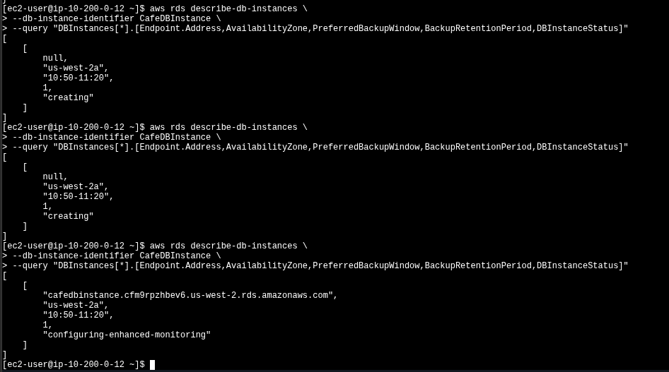
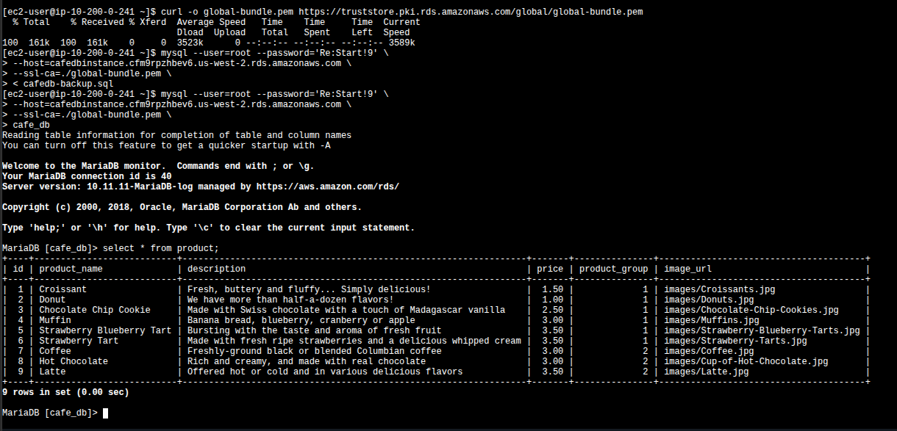

What moved
cafe_db — 9 products plus orders and accounts — migrated from a local MariaDB
on the LAMP EC2 to a managed db.t3.micro RDS instance with 20 GB of
allocated storage and automated daily backups.
Migrate the café web app database from a local MariaDB running on EC2 to a managed Amazon RDS MariaDB instance — built entirely from the AWS CLI, with TLS-encrypted data restore and zero application code changes.
The café app started with its database on the same EC2 instance as the web tier — a LAMP stack where MariaDB shared the host with Apache and PHP. The goal of this lab was to externalize that database into Amazon RDS without touching the application code. The work is driven from the AWS CLI: build the network plumbing (private subnets across two AZs, a dedicated SG, a DB subnet group), provision the RDS instance, dump and restore the data over a TLS connection, and finally point the app at the new endpoint via SSM Parameter Store.
cafe_db — 9 products plus orders and accounts — migrated from a local MariaDB
on the LAMP EC2 to a managed db.t3.micro RDS instance with 20 GB of
allocated storage and automated daily backups.
The PHP application code. Connection details live in /cafe/dbUrl in SSM
Parameter Store, so the cutover is just an edit of that parameter — the app picks up the new
host on the next request.
The starting topology bundled web tier and DB tier in one EC2 instance inside the public subnet. The final topology splits the DB out into RDS, behind a dedicated security group, across two private subnets in different AZs.
| Component | Before (LAMP on EC2) | After (RDS migration) |
|---|---|---|
| Web tier | Apache + PHP on CafeInstance (public subnet, t3.small) | Unchanged |
| Database | MariaDB local on the same EC2, port 3306 listening on localhost | Amazon RDS MariaDB 10.11.11 · db.t3.micro · 20 GB · Single-AZ · private |
| Network placement | Public subnet 10.200.0.0/24 only | Adds private 10.200.2.0/23 (AZ-a) and 10.200.10.0/23 (AZ-b) |
| DB security | Implicit (loopback on the EC2) | CafeDatabaseSG — TCP 3306 only from CafeSecurityGroup as source SG |
| Connection in transit | Loopback (no encryption needed) | TLS required — clients must present the RDS CA bundle |
| Backups | None automatic | Daily automated, 30-min backup window, 1-day retention (default) |
| App cutover mechanism | — | /cafe/dbUrl in SSM Parameter Store — value swap, no redeploy |
The lab guide ships Starting architecture and Final architecture diagrams, but they live as Vocareum-hosted images that aren't part of the local source — the table above captures the same delta in text form.
Five tasks, two screenshots. The CLI commands are reproduced verbatim because they are the lab deliverable; the click-paths through the console are summarized.
Opened the café website at CafeInstanceURL, placed a few orders from the
Menu, and noted the order count on the Order History tab.
That number is the integrity check at the other end of the migration: same number of orders
must show up after the cutover.
Connected to the CLI Host via EC2 Instance Connect and ran
aws configure with the lab's AccessKey, SecretKey,
LabRegion and JSON output. All the following commands run from that host.
2.1 — Dedicated security group for the DB
CafeDatabaseSG protects the future RDS instance. The inbound rule allows TCP
3306, but instead of opening a CIDR range it uses
another security group as the source — only instances attached to
CafeSecurityGroup can reach the DB. Cleaner than CIDRs because it follows the
workload, not the IP.
aws ec2 create-security-group \
--group-name CafeDatabaseSG \
--description "Security group for Cafe database" \
--vpc-id <CafeVpcID>
aws ec2 authorize-security-group-ingress \
--group-id <CafeDatabaseSG Group ID> \
--protocol tcp --port 3306 \
--source-group <CafeSecurityGroup Group ID>
aws ec2 describe-security-groups \
--query "SecurityGroups[*].[GroupName,GroupId,IpPermissions]" \
--filters "Name=group-name,Values='CafeDatabaseSG'"2.2 — Two private subnets in different AZs
The VPC is 10.200.0.0/20 and the public subnet already occupies
10.200.0.0/24. RDS requires a DB subnet group with at least two
subnets in different Availability Zones — even for a Single-AZ instance — so
failover targets exist. Picked 10.200.2.0/23 in the same AZ as the app (for
proximity) and 10.200.10.0/23 in a second AZ as the failover slot.
# Private subnet 1 — same AZ as CafeInstance
aws ec2 create-subnet \
--vpc-id <CafeVpcID> \
--cidr-block 10.200.2.0/23 \
--availability-zone <CafeInstanceAZ>
# Private subnet 2 — a different AZ (e.g. us-west-2b)
aws ec2 create-subnet \
--vpc-id <CafeVpcID> \
--cidr-block 10.200.10.0/23 \
--availability-zone <other-AZ>
aws rds create-db-subnet-group \
--db-subnet-group-name "CafeDB Subnet Group" \
--db-subnet-group-description "DB subnet group for Cafe" \
--subnet-ids <PrivateSubnet1ID> <PrivateSubnet2ID> \
--tags "Key=Name,Value=CafeDatabaseSubnetGroup"create-db-instance rejects the request — the
requirement exists so a Multi-AZ promotion later is a no-op networking-wise.
One create-db-instance call with everything inlined: engine, version, size,
storage, AZ, SG, subnet group, no public access, root credentials. The call returns
immediately but the instance takes ~10 minutes to reach available.
aws rds create-db-instance \
--db-instance-identifier CafeDBInstance \
--engine mariadb \
--engine-version 10.11.11 \
--db-instance-class db.t3.micro \
--allocated-storage 20 \
--availability-zone <CafeInstanceAZ> \
--db-subnet-group-name "CafeDB Subnet Group" \
--vpc-security-group-ids <CafeDatabaseSG Group ID> \
--no-publicly-accessible \
--master-username root \
--master-user-password 'Re:Start!9'Polling the lifecycle
Used describe-db-instances with a --query projection so the
output is a flat array of the five fields that actually matter while waiting: endpoint,
AZ, backup window, retention, and status. The status walks through
creating → modifying → backing-up → configuring-enhanced-monitoring → available,
and the endpoint is null until very late in that chain.
aws rds describe-db-instances \
--db-instance-identifier CafeDBInstance \
--query "DBInstances[*].[Endpoint.Address,AvailabilityZone,PreferredBackupWindow,BackupRetentionPeriod,DBInstanceStatus]"
describe-db-instances: the first two return null for the endpoint and status creating; the third shows the assigned endpoint cafedbinstance.cfm9rpzhbev6.us-west-2.rds.amazonaws.com and status configuring-enhanced-monitoring. Backup window 10:50–11:20, retention 1 day — both AWS defaults.
Connected to the CafeInstance (web tier) via EC2 Instance Connect — this
is the host that can reach the new SG because CafeSecurityGroup is the
authorized source for CafeDatabaseSG.
4.1 — Dump the local database
--add-drop-database makes the dump self-contained: the restore drops
cafe_db first if it exists, then recreates it. Safe to re-run.
mysqldump --user=root --password='Re:Start!9' \
--databases cafe_db --add-drop-database > cafedb-backup.sql
less cafedb-backup.sql # quick sanity check on schema + INSERTs4.2 — Pull the RDS CA bundle
Modern RDS requires TLS by default. Without --ssl-ca the connection is
refused. The CA bundle is a static URL — pulled once with curl to the local
working directory.
curl -o global-bundle.pem \
https://truststore.pki.rds.amazonaws.com/global/global-bundle.pem4.3 — Restore the dump and verify
Same mysql binary, now pointed at the RDS endpoint with the CA bundle and the
SQL file piped in via <. Then an interactive session against
cafe_db and a SELECT * FROM product to confirm row integrity.
The product table is the catalog the website displays, so if it's intact, the menu page
will render correctly after the cutover.
# Restore (silent — no output on success)
mysql --user=root --password='Re:Start!9' \
--host=<RDS-Endpoint> \
--ssl-ca=./global-bundle.pem \
< cafedb-backup.sql
# Verify
mysql --user=root --password='Re:Start!9' \
--host=<RDS-Endpoint> \
--ssl-ca=./global-bundle.pem \
cafe_db
MariaDB [cafe_db]> select * from product;
curl pulling the 161 KB CA bundle, the SSL-secured restore (silent on success), and the interactive session returning all 9 products from cafe_db — Croissant, Donut, Chocolate Chip Cookie, Muffin, Strawberry Blueberry Tart, Strawberry Tart, Coffee, Hot Chocolate, Latte. The MariaDB greeting confirms the host is "managed by https://aws.amazon.com/rds/".--ssl-ca and the same
command fails with a TLS handshake error against RDS. The CA bundle has to live alongside
whatever client connects to the database — that's a deployment artifact, not just a
lab quirk.
The PHP café app doesn't hardcode its DB URL — it reads
/cafe/dbUrl from AWS Systems Manager Parameter Store on
each request. The cutover is therefore a single edit:
/cafe/dbUrl → Edit.localhost or the EC2 private IP) with the RDS endpoint cafedbinstance.cfm9rpzhbev6.us-west-2.rds.amazonaws.com.
Verification: reload CafeInstanceURL in the browser, open
Order History, and confirm the order count matches what was recorded in
Task 1. Same number → same data → migration succeeded.
RDS publishes a fixed set of instance metrics to CloudWatch every minute, no extra setup required. The Monitoring tab on the DB instance page exposes them as pre-built graphs.
| Metric | What it tracks |
|---|---|
CPUUtilization | Percent CPU used by the DB engine |
DatabaseConnections | Number of active client connections |
FreeStorageSpace | Remaining bytes of the allocated storage |
FreeableMemory | RAM available on the instance |
WriteIOPS / ReadIOPS | Avg disk I/O ops per second |
Sanity-checked the live signal: opened an interactive mysql session from the
CafeInstance to RDS and waited a minute — the DatabaseConnections graph went
from 0 to 1. Ran exit, waited another minute, refreshed — back to 0.
Confirms metrics are flowing on the standard 1-minute granularity.
truststore.pki.rds.amazonaws.com — treat it as a deployment artifact.mysqldump --add-drop-database produces an idempotent dump — re-running the restore is safe.
The actual data move (mysqldump → mysql <) is the trivial part.
The valuable AWS-specific work was upstream: carving out private subnets across two AZs,
wiring a security group whose source is another SG, and accepting that the encrypted-by-default
connection is non-negotiable.
Downstream, the Parameter Store cutover demonstrated why managed configuration matters: a database tier got swapped out and the application didn't notice. That decoupling is what makes RDS adoption realistic for existing workloads — not the provisioning, the cutover.